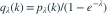
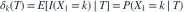
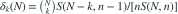

设  独立同分布，
独立同分布，![P_\lambda(X_i=k)=\lambda^k/[k!(e^\lambda-1)]](../practice/math/91d546e6f2984d8977f6.svg) ，
， ，
， 。记
。记  ，n是样本量。
，n是样本量。 表示把a个不同元素分成b个非空、无标号组的第二类Stirling数。设
表示把a个不同元素分成b个非空、无标号组的第二类Stirling数。设  ，k为事先固定的正整数。另记普通泊松概率 ，目标为
，k为事先固定的正整数。另记普通泊松概率 ，目标为  。下列哪个是适用于所有合法n、N、k的UMVUE取值 ？各选项所列式子用于
。下列哪个是适用于所有合法n、N、k的UMVUE取值 ？各选项所列式子用于  ，范围外均取0。
，范围外均取0。
独立同分布，，，。记 ，n是样本量。 表示把a个不同元素分成b个非空、无标号组的第二类Stirling数。设 ，k为事先固定的正整数。另记普通泊松概率 ，目标为 
。已知T完全充分，观察到T=N，其中整数。下列哪个是适用于所有合法n、N、k的UMVUE取值 ？各选项所列式子用于 ，范围外均取0。- A

- B

- C

- D

我已思考，展开答案与解析
正确答案：B
- 样本服从零截断泊松，所以 。指示变量是目标qλ(k)的初始无偏估计量。
- 对完全充分统计量T条件化，

。由Rao–Blackwell与Lehmann–Scheffé定理，它就是qλ(k)的UMVUE。 - 给定T=N时，用 。其中剩余n−1项的总和质量含 ，分母总和质量含 ；λ的因子全部约去。
- 因此

，；否则为0，因为其余n−1个观测至少各为1。 - 完整估计量是在上述表达式中将观测总和N换回随机总和T。n始终是样本量，N只是本次观测到的总和；固定k后，δk(N)是关于N的函数。
易错提醒目标中的pλ(k)是普通泊松的概率函数，但本题样本自身是零截断泊松。不能把其条件分布直接换成普通Bin(N,1/n)，也不能把N当作样本量。
零截断泊松 · 回忆进阶重建 · 回忆pλ(k)/(1−e^(−λ))与T=N的一般UMVUE；条件分布独立推导
根据考后回忆原创重建，非已核实考试原题；模型条件与数字已明确补全。
查看参考来源